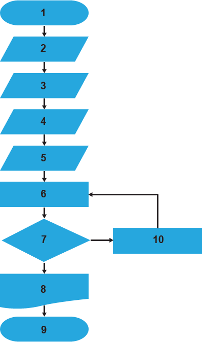

O transporte de um fluido entre dois pontos no interior de um tubo ocorre simultaneamente, com perda de energia, devido ao atrito do fluido com a parede e ao escoamento turbulento. Portanto, quanto maior for a rugosidade da parede da tubulação ou mais viscoso for o fluido, maior será a perda de energia. A forma de determinação do fator de atrito foi estabelecida em 1939, por intermédio da equação de Colebrook- White, apresentada a seguir.
em que
f é o fator de atrito de Darcy-Weisbach(adimensional);
k é a rugosidade equivalente da parede do tubo (m);
D é o diâmetro interno do tubo (m);
 é o número de Reynolds (adimensional).
é o número de Reynolds (adimensional).
A resolução dessa equação requer um processo iterativo, pois a função é implícita em relação ao fator de atrito (presente nos dois membros da equação). Em 1939, a resolução de equações por procedimentos iterativos demandava excesso de tempo, mas, com o desenvolvimento dos conhecimentos de computação, esse problema foi solucionado.
As etapas de um algoritmo que soluciona a equação, sem ordenação lógica, assim como seu fluxograma são apresentados a seguir.
A)  B)
B)  C) Início
D) Cálculo de
C) Início
D) Cálculo de  através da equação de ColebrookWhite
E)
através da equação de ColebrookWhite
E)  F) Término
G)
F) Término
G)  H)
H)  1)
1)  J) Visualização do resultado
J) Visualização do resultado

Com base nessas informações, verifica-se que a solução da equação é obtida pela seguinte associação das etapas do algoritmo com o fluxograma